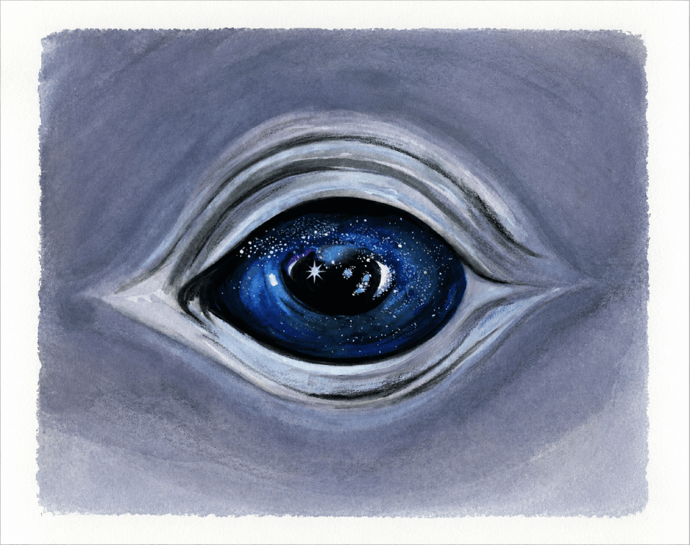

In the deep waters of the Pacific Northwest, a young whale carries the dreams of the ocean. Ancient stories speak of star spirits that guide the whale on its sacred journey. To summon the whale, you must first gather three stars from the earth...
turn on your sound for the best experience
tap the ground 3 times to start